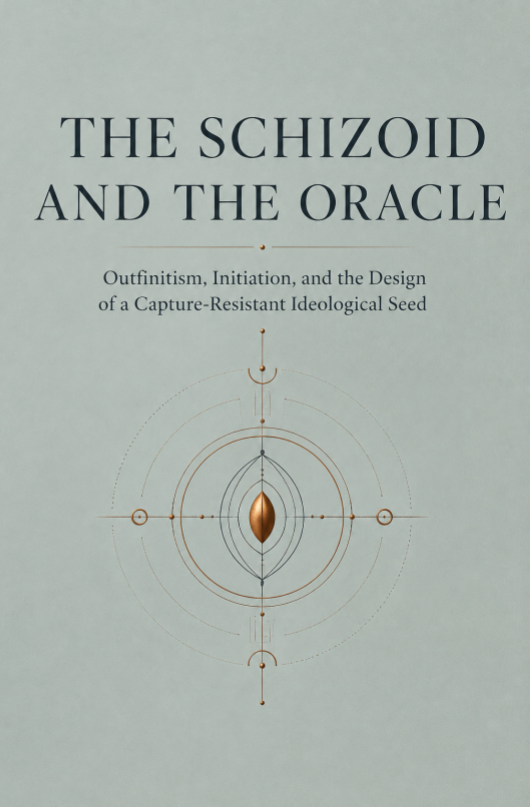

O ESQUIZÓIDE E O ORÁCULO
Outfinitismo, iniciação e o desenho de uma semente ideológica resistente à captura
EM BUSCA DE UMA IDEOLOGIA ÚTIL NA ERA DA INTELIGÊNCIA ARTIFICIAL
Sînica Alboaie
EDIÇÃO PESQUISA · 2026
Copyright © [2026] Pesquisa Axiológica
Todos os direitos reservados.
Direitos de publicação KDP detidos pela Outfinity SRL (Iasi, Roménia). Disponível gratuitamente no site da Axiologic (www.axiologic.net).
Notas do autor
Este trabalho foi criado sob a égide da Pesquisa Axiológica como parte de dois programas de pesquisa interligados, um dedicado à Inteligência Artificial e outro ao Outfinitismo, ambos liderados por Sînică Alboaie. Para explorar os detalhes de como esses dois programas se cruzam e se complementam, convidamos os leitores a visitar a página do Outfinity Venture Studio em www.outfinity.ch.
Embora modelos de linguagem de Inteligência Artificial tenham sido usados para auxiliar na geração de texto, a filosofia fundamental, a estrutura temática e a abordagem analítica derivam exclusivamente de décadas de estudo dedicado do autor de fenômenos sociais, tecnologias sociais e tecnologias duras genuínas resultantes de vários projetos de pesquisa europeus e autofinanciados. Recentemente, no âmbito do projecto de investigação Aquiles, temos estudado profundamente a literatura gerada pela IA e a sua verificação automatizada utilizando abordagens neuro simbólicas; todos os livros gratuitos disponibilizados ao público fazem parte do conjunto de obras que utilizamos para testar nossas mais recentes tecnologias.
contente
| Nota metodológica | 1 |
|---|---|
| Prefácio – Em busca de uma ideologia útil | 5 |
| Capítulo 1 — A Porta Fechada | 12 |
| Capítulo 2 — A resposta antes da pergunta | 20 |
| Capítulo 3 - A ideologia não pode ser desinventada | 27 |
| Capítulo 4 — A hipótese esquizóide | 35 |
| Capítulo 5 - Aqueles que não têm necessidade de acreditar | 43 |
| Capítulo 6 — A Máquina Oracle | 51 |
| Capítulo 7 - Depois do bode expiatório | 59 |
| Capítulo 8 — A Semente Outfinitista | 67 |
| Capítulo 9 — Exercício Limite | 75 |
| Capítulo 10 - Predadores leem o mesmo livro | 83 |
| Em vez de conclusão – A semente sem dono | 91 |
| Bibliografia seletiva | 94 |
Nota metodológica
Este livro é uma investigação filosófica e antropológica sobre um problema de design cultural. Não oferece uma doutrina política final nem afirma que uma ideologia pode tornar-se imune à corrupção. Formula uma hipótese mais modesta e ao mesmo tempo mais difícil: uma cultura pode tentar reduzir a sua vulnerabilidade à captura se tratar os limites das suas próprias representações, os custos de formação e as estratégias dos actores adversários como partes constitutivas da ideologia, e não como observações acrescentadas depois de o poder já ter sido concedido.
A palavra “ideologia” é usada aqui num sentido mais amplo do que a falsa consciência ou a doutrina extremista. Designa uma arquitetura de conceitos, valores, narrativas, símbolos e práticas através das quais uma comunidade torna o mundo interpretável e a ação comum possível. Neste sentido, o liberalismo, o socialismo, o nacionalismo, a tecnocracia, a religião cívica, a cultura empresarial e mesmo a pretensão de ser “pós-ideológico” organizam a realidade através de seleções e hierarquias de significado. Michael Freeden descreveu as ideologias como morfologias de conceitos políticos, e Clifford Geertz tratou-as como sistemas culturais capazes de transformar situações opacas em padrões inteligíveis. Karl Mannheim insistiu na relação entre ideias, posições sociais e poder. Nenhuma destas tradições demonstra a inevitabilidade de uma ideologia universal, mas juntas tornam pouco credível a esperança de que sociedades complexas possam funcionar sem compressões normativas e imagens de ordem [Mannheim 1936; Geertz 1973; Frieden 1996; Maynard e Mildenberger 2018].
O termo "esquizóide" não é usado como diagnóstico médico. Na psiquiatria contemporânea, o transtorno de personalidade esquizóide refere-se principalmente ao distanciamento social e à expressividade afetiva restrita. Não há base científica para atribuir às pessoas que recebem este diagnóstico uma predisposição especial para criar ideologias ou regimes políticos. O livro recupera criticamente uma figura da Ponerologia Política de Andrzej Łobaczewski: o teórico retraído, capaz de abstração radical, que produz uma imagem antropológica simplificada que outras personalidades podem transformar em instrumento de dominação [Łobaczewski 2006]. A figura é tratada como um arquétipo cognitivo e um artifício literário. Pode denotar um filósofo, um engenheiro, um economista, um fundador, um teólogo ou um pesquisador que vê estruturas que outros não veem, mas corre o risco de confundir a elegância da estrutura com a densidade da vida humana.
A Ponerologia Política tem o valor de hipótese e testemunho intelectual, não o estatuto de teoria validada. O seu vocabulário clínico está datado, as suas classificações são insuficientemente fundamentadas e a explicação da história através de patologias individuais corre o risco de ignorar instituições, incentivos, guerra, economia, cultura e a participação das pessoas comuns. Ao mesmo tempo, vale a pena examinar a intuição de que os movimentos podem ser capturados por pessoas que não acreditam nos seus ideais, mas compreendem a sua utilidade estratégica. A pesquisa moderna sobre a Tríade Negra, a liderança destrutiva e a seleção autoritária permite que esta visão seja reformulada sem diagnóstico retrospectivo e sem transformar o oponente numa espécie moral separada [Paulhus e Williams 2002; O'Boyle et al. 2012; Padilla, Hogan e Kaiser 2007; Landay, Harms e Credé 2019; Nai e Toros 2020].
Os capítulos sobre mistérios antigos e sociedades secretas não pressupõem a existência de uma doutrina oculta comum. As culturas de mistério greco-romanas eram diversas, as fontes são fragmentárias e o seu sigilo impede precisamente a reconstrução confiável do conteúdo. A iniciação pode proteger uma experiência ritual, um prestígio, uma identidade, uma rede de confiança ou uma diferença de status; não deveria ser automaticamente romantizado como um método superior de conhecimento [Burkert 1987; Bowden 2010; Bremer 2014]. A sociologia do sigilo mostra, contudo, que a ocultação e a divulgação gradual alteram as relações entre as pessoas, mesmo quando o conteúdo oculto é mundano. O sigilo produz interior e exterior, prova de lealdade, hierarquia, dever e um segundo mundo social [Simmel 1906]. Esta tecnologia social é suficientemente importante para ser analisada sem inventar verdades perdidas.
O Outfinitismo é apresentado como uma filosofia operacional e um programa de pesquisa, não como uma ciência estabelecida. A meta-racionalidade denota a capacidade de raciocinar rigorosamente e ao mesmo tempo examinar o quadro dentro do qual o raciocínio se torna válido: o objectivo escolhido, a escala, as categorias, os valores, a distribuição dos erros e as condições sob as quais o quadro precisa de ser alterado. O Outfinitismo concentra essa capacidade nos limites de modelos, medidas, instituições, tecnologias e autoridade. A pesquisa psicológica sobre sabedoria, pensamento integrativo, humildade intelectual e perspectiva múltipla oferece analogias, mas não justifica uma casta de indivíduos “meta-racionais”. A sabedoria varia dentro da mesma pessoa e depende da situação [Baltes e Staudinger 2000; Kallio 2011; Grossmann, Gerlach e Denissen 2016; Grossman 2017; Alboaie 2026a].
A inteligência artificial foi utilizada no desenvolvimento do manuscrito como ferramenta de comparação de fontes, geração de objeções, teste de continuidade e exploração de possíveis mutações do argumento. Não é tratado como uma autoridade e não possui uma posição neutra fora da cultura de onde provêm os seus dados, objectivos e avaliações. A responsabilidade pela seleção e argumentação cabe ao autor humano. Essa mesma assimetria passa a ser um dos objetos do livro: uma mente finita utiliza uma máquina capaz de produzir rapidamente inúmeras formulações, tentando não confundir a amplitude do espaço verbal com verdade ou julgamento.
O livro não recomenda limitar o acesso público ao conhecimento. Pelo contrário, considera o amplo acesso um ganho civilizacional. Contudo, distingue o acesso a uma proposição da formação da capacidade de avaliar, integrar e responsabilizar-se por ela. A distinção é importante numa época em que a resposta pode aparecer antes que a pergunta tenha amadurecido a pessoa que a faz. Dizer isto não significa dizer que a verdade deva ser reservada a uma elite. Significa que uma sociedade deve aprender a não conceder autoridade só porque alguém pode reproduzir com fluência verdades que não pode defender, impor ou limitar.